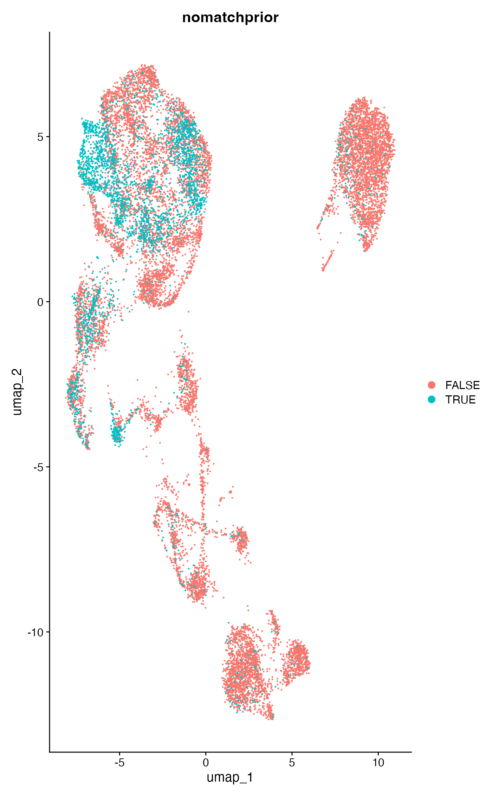
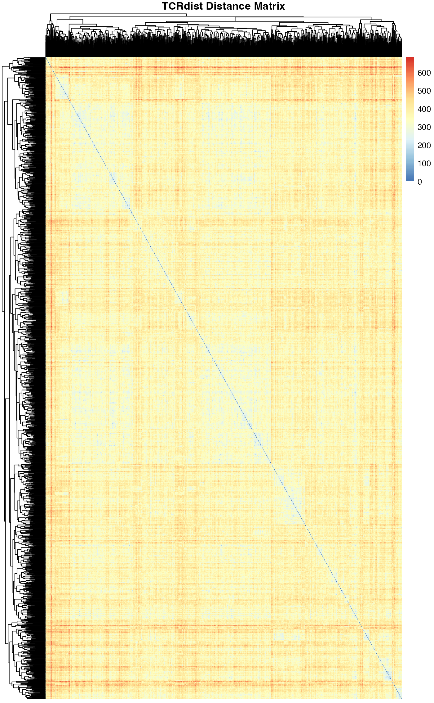
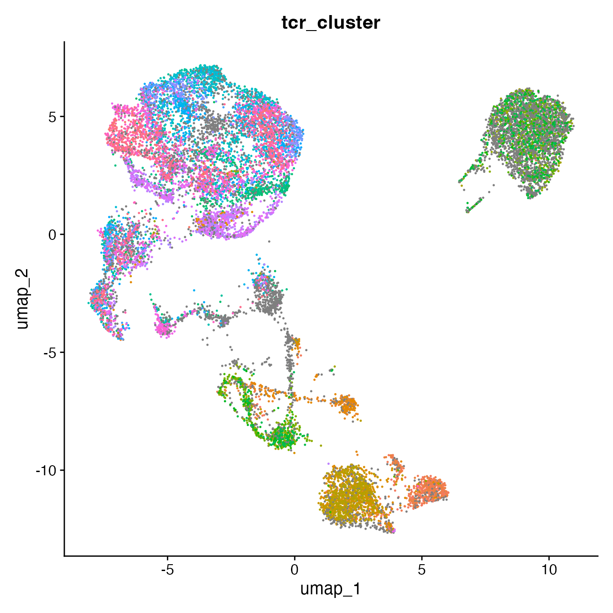

Seurat v5 + 10x VDJ v2 Integration
Source:vignettes/seurat-vdj-integration.Rmd
seurat-vdj-integration.RmdInstallation
Prerequisites
- R (>= 4.0)
- Rust (>= 1.70) - Install Rust
- R development tools (Rtools on Windows, Xcode Command Line Tools on macOS)
From Github in R
devtools::install_github("furlan-lab/vdjmatchR")Overview
This vignette shows how to: - Start from a Seurat v5 object. - Attach 10x 5’ VDJ v2 outputs to the object with flexible cell-name mapping. - Inspect mapping diagnostics and basic metadata written by vdjmatchR.
Later sections (placeholders) will add pairing/QC, clonotype definitions, and vdjmatchR matching.
Note: paths below reference user-specific data; code chunks are guarded to run only if files exist.
Load packages
library(Seurat)
#> Loading required package: SeuratObject
#> Loading required package: sp
#> 'SeuratObject' was built under R 4.4.1 but the current version is
#> 4.4.3; it is recomended that you reinstall 'SeuratObject' as the ABI
#> for R may have changed
#>
#> Attaching package: 'SeuratObject'
#> The following objects are masked from 'package:base':
#>
#> intersect, t
library(vdjmatchR)
library(magrittr)Provide your inputs
Set the path to a Seurat v5 object (RDS) and to the 10x VDJ directory
(vdj_t).
# Edit these to your environment
seurat_rds <- "/Volumes/furlan_s/user/jperalta/MMCarT_240212_reseq/cds/mmcart_seu_viewmastR_CARpositive_251023.RDS"
vdj_dir <- "/Volumes/furlan_s/user/jperalta/MMCarT_240212_reseq/FOLDERNAME1/data/FOLDERNAME2/outs/per_sample_outs/FOLDERNAME2/vdj_t"Load Seurat object
if (nzchar(seurat_rds) && file.exists(seurat_rds)) {
orig <- readRDS(seurat_rds)
} else {
message("Set SEURAT_RDS_PATH to a Seurat v5 RDS file to run this vignette end-to-end.")
}
prefixes <- sub("[ACGT]{16}-\\d+$", "", Cells(orig)) %>% unique()
folders2 <- sub("^[^_]+_(.+)_$", "\\1", prefixes)
folders1 <- sub("_[^_]+$", "", folders2)
matchdf <- data.frame(PREFIXES=prefixes, FOLDERNAME1=folders1, FOLDERNAME2=folders2)Attach 10x VDJ v2 to Seurat
The function vdj_attach_10x_vdj_v2() reads
filtered_contig_annotations.csv and
clonotypes.csv, maps 10x barcodes to Seurat cell names
(with flexible strategies), and stores heavy tables in
obj@tools$vdj. Minimal metadata (10x clonotype id/size) can
be written per cell.
Set include_cdr12 = TRUE to optionally pull in CDR1 and
CDR2 amino-acid sequences when available in the 10x VDJ output
files.
obj <- vdj_attach_10x_vdj_v2_batch(
orig,
matchdf,
vdj_dir_template = vdj_dir,
include_cdr12 = TRUE) # Optional: include CDR1 and CDR2 sequences
obj$vdj.cdr3_aa_both <- paste0(obj$vdj.tra.cdr3_aa, "_", obj$vdj.trb.cdr3_aa)
obj$nomatchprior <- obj$vdj.cdr3_aa_both != obj$cdr3
table(obj$nomatchprior)[2]/(table(obj$nomatchprior)[1]+table(obj$nomatchprior)[2])
#> TRUE
#> 0.2127323
DimPlot(obj, group.by = "nomatchprior")
Collapse to TRA1/TRB (dominant) and optional TRA2/TRB (secondary)
# Select 1 TRB and up to 2 TRA per cell; write metadata and a pairs table
# Set include_cdr12 = TRUE to also include CDR1 and CDR2 in metadata
obj <- vdj_collapse_pairs_seurat(
obj,
drop_multi_trb = TRUE,
keep_two_alpha = TRUE,
alpha_support = "umis",
require_productive = TRUE,
write_meta = TRUE,
update_primary_meta = TRUE,
include_cdr12 = TRUE # Optional: include CDR1 and CDR2 in collapsed pairs
)
# When include_cdr12 = TRUE, the following additional metadata columns are created:
# - vdj.tra1.cdr1_aa, vdj.tra1.cdr2_aa (primary alpha)
# - vdj.tra2.cdr1_aa, vdj.tra2.cdr2_aa (secondary alpha, if present)
# - vdj.trb.cdr1_aa, vdj.trb.cdr2_aa (beta chain)
# - vdj.tra.cdr1_aa, vdj.tra.cdr2_aa (legacy fields matching TRA1)
# Overall dual-TRA fraction
if ("vdj.has_tra2" %in% colnames(obj@meta.data)) {
frac_dual <- mean(obj$vdj.has_tra2 %in% TRUE, na.rm = TRUE)
cat(sprintf("Dual-TRA fraction: %.1f%%\n", 100 * frac_dual))
}
#> Dual-TRA fraction: 7.7%
# Per-cluster dual-TRA rates when cluster labels exist
group_col <- NULL
if ("seurat_clusters" %in% colnames(obj@meta.data)) group_col <- "seurat_clusters"
if (!is.null(group_col)) {
g <- obj@meta.data[[group_col]]
p <- tapply(obj$vdj.has_tra2 %in% TRUE, g, function(x) mean(x, na.rm = TRUE))
print(round(100 * p, 1))
}
#> 0 1 2 3 4 5 6 7 8 9 10 11 12 13 14 15
#> 2.9 10.2 9.6 8.0 8.9 8.2 10.4 8.1 1.9 10.6 12.2 7.0 12.4 7.1 7.6 1.5
#> 16 17 18 19
#> 6.1 6.6 2.2 10.0
# Preview pairs table (first 6 rows)
if (!is.null(obj@tools$vdj$pairs)) {
print(utils::head(obj@tools$vdj$pairs, 6))
}
#> cell pair_rank tra_cdr3
#> 1 CD3pos_JP_709_707_CD3pos_AAACCTGTCATATCGG-1 1 CAFPNFNKFYF
#> 2 CD3pos_JP_709_707_CD3pos_AAAGCAACACTCTGTC-1 1 CALSEVEYGQNFVF
#> 3 CD3pos_JP_709_707_CD3pos_AAAGCAACACTCTGTC-1 2 CVVSDPTSGTYKYIF
#> 4 CD3pos_JP_709_707_CD3pos_AAAGTAGGTACCTACA-1 1 CAVSDFAGGTSYGKLTF
#> 5 CD3pos_JP_709_707_CD3pos_AACTCTTCACATCCGG-1 1 CALSRFNFGNEKLTF
#> 6 CD3pos_JP_709_707_CD3pos_AACTTTCAGGCCATAG-1 1 CAASDYKLSF
#> tra_v tra_j tra_umis tra_reads trb_cdr3 trb_v trb_j trb_umis
#> 1 TRAV24 TRAJ21 5 604 CASSTHTNSYNEQFF TRBV19 TRBJ2-1 22
#> 2 TRAV19 TRAJ26 13 4296 CSAGGGPNHEQYF TRBV20-1 TRBJ2-7 21
#> 3 TRAV10 TRAJ40 4 1824 CSAGGGPNHEQYF TRBV20-1 TRBJ2-7 21
#> 4 TRAV8-4 TRAJ52 11 2123 CSALVQGESGQPQHF TRBV20-1 TRBJ1-5 13
#> 5 TRAV9-2 TRAJ48 2 644 CASSQDRVGPGGLHF TRBV14 TRBJ1-6 16
#> 6 TRAV13-1 TRAJ20 7 2153 CSASEFTGELFF TRBV20-1 TRBJ2-2 19
#> trb_reads
#> 1 7714
#> 2 7395
#> 3 7395
#> 4 4713
#> 5 3997
#> 6 7541Inspect attached tables and metadata
cat("Contigs rows:", nrow(obj@tools$vdj$contigs), "\n")
#> Contigs rows: 255829
print(utils::head(obj@tools$vdj$contigs[ , c("barcode","chain","v_gene","j_gene","cdr3","umis","cell","sample_id")], 5))
#> barcode chain v_gene j_gene cdr3 umis cell
#> 1 AAACCTGAGAACAACT-1 TRB TRBV10-2 TRBJ2-2 CASSGIRAPAGELFF 14 <NA>
#> 2 AAACCTGAGAACAACT-1 TRA TRAV16 TRAJ32 CALSGRYGGATNKLIF 4 <NA>
#> 3 AAACCTGAGCGCCTTG-1 TRB TRBV4-2 TRBJ2-7 CASSQGEAPSYEQYF 26 <NA>
#> 4 AAACCTGAGCGCCTTG-1 TRA TRAV14/DV4 TRAJ44 CAMRVRTGTASKLTF 4 <NA>
#> 5 AAACCTGAGGTGCTTT-1 TRB TRBV2 TRBJ2-3 CASSGAGLAGDPTSTDTQYF 8 <NA>
#> sample_id
#> 1 JP_709_707_CD3pos
#> 2 JP_709_707_CD3pos
#> 3 JP_709_707_CD3pos
#> 4 JP_709_707_CD3pos
#> 5 JP_709_707_CD3pos
cols <- intersect(c("vdj.clone_id_10x","vdj.clone_size_10x"), colnames(obj@meta.data))
if (length(cols)) print(utils::head(obj@meta.data[, cols, drop = FALSE]))
#> vdj.clone_id_10x
#> CD3pos_JP_709_707_CD3pos_AAACCTGTCATATCGG-1 JP_709_707_CD3pos:clonotype1825
#> CD3pos_JP_709_707_CD3pos_AAAGCAACACTCTGTC-1 JP_709_707_CD3pos:clonotype581
#> CD3pos_JP_709_707_CD3pos_AAAGTAGGTACCTACA-1 JP_709_707_CD3pos:clonotype276
#> CD3pos_JP_709_707_CD3pos_AACGTTGCAAACGCGA-1 JP_709_707_CD3pos:clonotype577
#> CD3pos_JP_709_707_CD3pos_AACTCTTCACATCCGG-1 JP_709_707_CD3pos:clonotype2287
#> CD3pos_JP_709_707_CD3pos_AACTTTCAGGCCATAG-1 JP_709_707_CD3pos:clonotype476
#> vdj.clone_size_10x
#> CD3pos_JP_709_707_CD3pos_AAACCTGTCATATCGG-1 1
#> CD3pos_JP_709_707_CD3pos_AAAGCAACACTCTGTC-1 1
#> CD3pos_JP_709_707_CD3pos_AAAGTAGGTACCTACA-1 2
#> CD3pos_JP_709_707_CD3pos_AACGTTGCAAACGCGA-1 1
#> CD3pos_JP_709_707_CD3pos_AACTCTTCACATCCGG-1 1
#> CD3pos_JP_709_707_CD3pos_AACTTTCAGGCCATAG-1 1Match Seurat TCRs to VDJdb
This section shows how to take the TRA/TRB sequences written into Seurat metadata and match them against VDJdb, producing a compact table of each cell’s top hit per chain.
Performance features: - Parallel processing using Rayon (Rust) for fast matching across multiple CPU cores - Progress bar for large datasets (>5000 queries) - Configurable fuzzy matching with edit distance tolerance
# 1) Load a VDJdb (use fat database for more complete annotations)
db_path <- vdjdb_packaged_path(use_fat_db = TRUE)
db <- vdjdb_open_file(db_path)
# Helper to build queries from metadata and get top-1 hit per query
# For TRA: emits one query per alpha (TRA1 and TRA2 when present)
# Optionally includes CDR1 and CDR2 if available in metadata
get_top_hits <- function(obj, db, chain = c("TRB", "TRA"), scope = "0,0,0,0", include_cdr1 = TRUE, include_cdr2 = TRUE) {
chain <- match.arg(chain)
ch <- tolower(chain)
md <- obj@meta.data
queries <- NULL
if (chain == "TRB") {
cols <- c(paste0("vdj.", ch, ".cdr3_aa"), paste0("vdj.", ch, ".v_gene"), paste0("vdj.", ch, ".j_gene"))
if (!all(cols %in% colnames(md))) return(NULL)
cdr3_col <- cols[1]; v_col <- cols[2]; j_col <- cols[3]
# Optional CDR1 and CDR2 columns
cdr1_col <- paste0("vdj.", ch, ".cdr1_aa")
cdr2_col <- paste0("vdj.", ch, ".cdr2_aa")
has_cdr1 <- include_cdr1 && cdr1_col %in% colnames(md)
has_cdr2 <- include_cdr2 && cdr2_col %in% colnames(md)
keep <- which(!is.na(md[[cdr3_col]]) & nzchar(md[[cdr3_col]]))
if (!length(keep)) return(NULL)
queries <- data.frame(
cell = rownames(md)[keep],
cdr3 = as.character(md[[cdr3_col]][keep]),
v = as.character(md[[v_col]][keep]),
j = as.character(md[[j_col]][keep]),
alpha_rank = NA_integer_,
stringsAsFactors = FALSE
)
# Add CDR1 and CDR2 if available
if (has_cdr1) {
queries$cdr1 <- as.character(md[[cdr1_col]][keep])
}
if (has_cdr2) {
queries$cdr2 <- as.character(md[[cdr2_col]][keep])
}
} else {
# TRA: build from tra1 and tra2 if present
cols1 <- c("vdj.tra1.cdr3_aa", "vdj.tra1.v_gene", "vdj.tra1.j_gene")
cols2 <- c("vdj.tra2.cdr3_aa", "vdj.tra2.v_gene", "vdj.tra2.j_gene")
# Optional CDR1 and CDR2 columns for TRA1 and TRA2
cdr1_col1 <- "vdj.tra1.cdr1_aa"
cdr2_col1 <- "vdj.tra1.cdr2_aa"
cdr1_col2 <- "vdj.tra2.cdr1_aa"
cdr2_col2 <- "vdj.tra2.cdr2_aa"
has_cdr1_1 <- include_cdr1 && cdr1_col1 %in% colnames(md)
has_cdr2_1 <- include_cdr2 && cdr2_col1 %in% colnames(md)
has_cdr1_2 <- include_cdr1 && cdr1_col2 %in% colnames(md)
has_cdr2_2 <- include_cdr2 && cdr2_col2 %in% colnames(md)
have1 <- all(cols1 %in% colnames(md))
have2 <- all(cols2 %in% colnames(md))
qlist <- list()
if (have1) {
keep1 <- which(!is.na(md[[cols1[1]]]) & nzchar(md[[cols1[1]]]))
if (length(keep1)) {
q1 <- data.frame(
cell = rownames(md)[keep1],
cdr3 = as.character(md[[cols1[1]]][keep1]),
v = as.character(md[[cols1[2]]][keep1]),
j = as.character(md[[cols1[3]]][keep1]),
alpha_rank = 1L,
stringsAsFactors = FALSE
)
if (has_cdr1_1) q1$cdr1 <- as.character(md[[cdr1_col1]][keep1])
if (has_cdr2_1) q1$cdr2 <- as.character(md[[cdr2_col1]][keep1])
qlist[[length(qlist)+1L]] <- q1
}
}
if (have2) {
keep2 <- which(!is.na(md[[cols2[1]]]) & nzchar(md[[cols2[1]]]))
if (length(keep2)) {
q2 <- data.frame(
cell = rownames(md)[keep2],
cdr3 = as.character(md[[cols2[1]]][keep2]),
v = as.character(md[[cols2[2]]][keep2]),
j = as.character(md[[cols2[3]]][keep2]),
alpha_rank = 2L,
stringsAsFactors = FALSE
)
if (has_cdr1_2) q2$cdr1 <- as.character(md[[cdr1_col2]][keep2])
if (has_cdr2_2) q2$cdr2 <- as.character(md[[cdr2_col2]][keep2])
qlist[[length(qlist)+1L]] <- q2
}
}
if (!length(qlist)) return(NULL)
queries <- do.call(rbind, qlist)
}
# Filter DB to species/gene
db_chain <- filter_db(db, species = "HomoSapiens", gene = chain, min_vdjdb_score = 0)
# Match and get top hit per query (uses parallel processing and shows progress)
hits <- match_tcr_many_df(db_chain, queries$cdr3, queries$v, queries$j,
scope = scope, top_n = 1L, progress = TRUE)
if (!nrow(hits)) return(NULL)
# Attach cell metadata back to hits
qi <- as.integer(hits$query_index)
hits$cell <- queries$cell[qi]
if ("alpha_rank" %in% colnames(queries)) hits$alpha_rank <- queries$alpha_rank[qi]
# Rename columns to more user-friendly names
# match_tcr_many_df returns: query_index, query_cdr3, query_v, query_j,
# cdr3_db, v_db, j_db, species, gene,
# antigen_epitope, antigen_gene, antigen_species,
# mhc_class, reference_id, vdjdb_score,
# score, cdr3_score, v_score, j_score, edit_distance
if ("cdr3_db" %in% colnames(hits)) names(hits)[names(hits) == "cdr3_db"] <- "epitope_cdr3"
if ("v_db" %in% colnames(hits)) names(hits)[names(hits) == "v_db"] <- "epitope_v"
if ("j_db" %in% colnames(hits)) names(hits)[names(hits) == "j_db"] <- "epitope_j"
if ("species" %in% colnames(hits)) names(hits)[names(hits) == "species"] <- "epitope_species"
# Select and order columns
keep_cols <- intersect(
c("cell", "alpha_rank", "query_cdr3", "query_v", "query_j",
"epitope_cdr3", "epitope_v", "epitope_j", "epitope_species",
"gene", "antigen_epitope", "antigen_gene", "antigen_species",
"mhc_class", "reference_id", "vdjdb_score",
"score", "cdr3_score", "v_score", "j_score", "edit_distance"),
colnames(hits)
)
hits[, keep_cols, drop = FALSE]
}
# Match TRB and TRA chains with fuzzy matching (allows up to 3 mismatches)
# By default, includes CDR1 and CDR2 if available in the metadata
top_trb <- get_top_hits(obj, db, chain = "TRB", scope = "1,1,1,1", include_cdr1 = TRUE, include_cdr2 = TRUE)
#> Matching 14217 TCRs against database (parallel processing enabled)
#> | | | 0% | |======================= | 33% | |=============================================== | 67% | |======================================================================| 100%
#> Matched 14217 queries, found 1384 hits
top_tra <- get_top_hits(obj, db, chain = "TRA", scope = "1,1,1,1", include_cdr1 = TRUE, include_cdr2 = TRUE)
#> Matching 12517 TCRs against database (parallel processing enabled)
#> | | | 0% | |======================= | 33% | |=============================================== | 67% | |======================================================================| 100%
#> Matched 12517 queries, found 5603 hits
# To exclude CDR1/CDR2, set the parameters to FALSE:
# top_trb <- get_top_hits(obj, db, chain = "TRB", scope = "0,0,0,0", include_cdr1 = FALSE, include_cdr2 = FALSE)
# top_tra <- get_top_hits(obj, db, chain = "TRA", scope = "0,0,0,0", include_cdr1 = FALSE, include_cdr2 = FALSE)
# Function to calculate TCRdist from Seurat object
calculate_tcrdist_from_seurat <- function(
seurat,
use_cdr12 = TRUE,
subset_cells = NULL,
alpha_chain = "vdj.tra1", # Can also use "vdj.tra" for legacy
require_complete = TRUE
) {
# Get metadata
md <- seurat@meta.data
# Subset to specific cells if requested
if (!is.null(subset_cells)) {
md <- md[subset_cells, , drop = FALSE]
}
# Build column names based on which alpha chain to use
cdr3_a_col <- paste0(alpha_chain, ".cdr3_aa")
cdr3_b_col <- "vdj.trb.cdr3_aa"
# Check if CDR3 columns exist
if (!all(c(cdr3_a_col, cdr3_b_col) %in% colnames(md))) {
stop(sprintf("Required columns not found: %s, %s", cdr3_a_col,
cdr3_b_col))
}
# CDR1/CDR2 columns (may not exist if include_cdr12 was FALSE)
cdr1_a_col <- paste0(alpha_chain, ".cdr1_aa")
cdr2_a_col <- paste0(alpha_chain, ".cdr2_aa")
cdr1_b_col <- "vdj.trb.cdr1_aa"
cdr2_b_col <- "vdj.trb.cdr2_aa"
has_cdr12 <- all(c(cdr1_a_col, cdr2_a_col, cdr1_b_col, cdr2_b_col) %in%
colnames(md))
if (use_cdr12 && !has_cdr12) {
warning("CDR1/CDR2 columns not found. Set use_cdr12 = FALSE or rerun
vdj_attach with include_cdr12 = TRUE")
use_cdr12 <- FALSE
}
# Filter to cells with complete TCR data
if (require_complete) {
keep <- !is.na(md[[cdr3_a_col]]) & !is.na(md[[cdr3_b_col]]) &
nzchar(md[[cdr3_a_col]]) & nzchar(md[[cdr3_b_col]])
if (use_cdr12) {
keep <- keep &
!is.na(md[[cdr1_a_col]]) & !is.na(md[[cdr2_a_col]]) &
!is.na(md[[cdr1_b_col]]) & !is.na(md[[cdr2_b_col]]) &
nzchar(md[[cdr1_a_col]]) & nzchar(md[[cdr2_a_col]]) &
nzchar(md[[cdr1_b_col]]) & nzchar(md[[cdr2_b_col]])
}
md <- md[keep, , drop = FALSE]
if (nrow(md) == 0) {
stop("No cells with complete TCR data found")
}
cat(sprintf("Calculating TCRdist for %d cells with complete TCR
data\n", nrow(md)))
}
# Extract sequences
cdr3_a <- md[[cdr3_a_col]]
cdr3_b <- md[[cdr3_b_col]]
if (use_cdr12) {
cdr1_a <- md[[cdr1_a_col]]
cdr2_a <- md[[cdr2_a_col]]
cdr1_b <- md[[cdr1_b_col]]
cdr2_b <- md[[cdr2_b_col]]
} else {
# Use empty strings if CDR1/2 not available
cdr1_a <- rep("", nrow(md))
cdr2_a <- rep("", nrow(md))
cdr1_b <- rep("", nrow(md))
cdr2_b <- rep("", nrow(md))
}
# Calculate TCRdist
result <- calculate_tcrdist(
cdr1_a = cdr1_a,
cdr2_a = cdr2_a,
cdr3_a = cdr3_a,
cdr1_b = cdr1_b,
cdr2_b = cdr2_b,
cdr3_b = cdr3_b
)
# Convert to distance matrix
n <- result$n
dist_matrix <- matrix(result$distance, nrow = n, ncol = n)
rownames(dist_matrix) <- rownames(md)
colnames(dist_matrix) <- rownames(md)
# Return list with matrix and cell info
list(
distance_matrix = dist_matrix,
cells = rownames(md),
n_cells = n,
used_cdr12 = use_cdr12
)
}
# Example usage with the Seurat object from the vignette:
# 1. Calculate TCRdist for all cells with complete TCR data (including CDR1/2)
tcrdist_result <- calculate_tcrdist_from_seurat(
obj,
use_cdr12 = TRUE,
require_complete = TRUE
)
#> Calculating TCRdist for 11256 cells with complete TCR
#> data
# View the distance matrix
print(tcrdist_result$distance_matrix[1:5, 1:5])
#> CD3pos_JP_709_707_CD3pos_AAACCTGTCATATCGG-1
#> CD3pos_JP_709_707_CD3pos_AAACCTGTCATATCGG-1 0
#> CD3pos_JP_709_707_CD3pos_AAAGCAACACTCTGTC-1 393
#> CD3pos_JP_709_707_CD3pos_AAAGTAGGTACCTACA-1 475
#> CD3pos_JP_709_707_CD3pos_AACTCTTCACATCCGG-1 401
#> CD3pos_JP_709_707_CD3pos_AACTTTCAGGCCATAG-1 340
#> CD3pos_JP_709_707_CD3pos_AAAGCAACACTCTGTC-1
#> CD3pos_JP_709_707_CD3pos_AAACCTGTCATATCGG-1 393
#> CD3pos_JP_709_707_CD3pos_AAAGCAACACTCTGTC-1 0
#> CD3pos_JP_709_707_CD3pos_AAAGTAGGTACCTACA-1 382
#> CD3pos_JP_709_707_CD3pos_AACTCTTCACATCCGG-1 406
#> CD3pos_JP_709_707_CD3pos_AACTTTCAGGCCATAG-1 331
#> CD3pos_JP_709_707_CD3pos_AAAGTAGGTACCTACA-1
#> CD3pos_JP_709_707_CD3pos_AAACCTGTCATATCGG-1 475
#> CD3pos_JP_709_707_CD3pos_AAAGCAACACTCTGTC-1 382
#> CD3pos_JP_709_707_CD3pos_AAAGTAGGTACCTACA-1 0
#> CD3pos_JP_709_707_CD3pos_AACTCTTCACATCCGG-1 423
#> CD3pos_JP_709_707_CD3pos_AACTTTCAGGCCATAG-1 407
#> CD3pos_JP_709_707_CD3pos_AACTCTTCACATCCGG-1
#> CD3pos_JP_709_707_CD3pos_AAACCTGTCATATCGG-1 401
#> CD3pos_JP_709_707_CD3pos_AAAGCAACACTCTGTC-1 406
#> CD3pos_JP_709_707_CD3pos_AAAGTAGGTACCTACA-1 423
#> CD3pos_JP_709_707_CD3pos_AACTCTTCACATCCGG-1 0
#> CD3pos_JP_709_707_CD3pos_AACTTTCAGGCCATAG-1 417
#> CD3pos_JP_709_707_CD3pos_AACTTTCAGGCCATAG-1
#> CD3pos_JP_709_707_CD3pos_AAACCTGTCATATCGG-1 340
#> CD3pos_JP_709_707_CD3pos_AAAGCAACACTCTGTC-1 331
#> CD3pos_JP_709_707_CD3pos_AAAGTAGGTACCTACA-1 407
#> CD3pos_JP_709_707_CD3pos_AACTCTTCACATCCGG-1 417
#> CD3pos_JP_709_707_CD3pos_AACTTTCAGGCCATAG-1 0
# 2. Calculate TCRdist using only CDR3 sequences
tcrdist_cdr3only <- calculate_tcrdist_from_seurat(
obj,
use_cdr12 = FALSE,
require_complete = TRUE
)
#> Calculating TCRdist for 11256 cells with complete TCR
#> data
# 3. Calculate for a specific subset of cells (e.g., a cluster)
cluster_cells <- rownames(obj@meta.data)[obj@meta.data$seurat_clusters ==
1]
tcrdist_cluster1 <- calculate_tcrdist_from_seurat(
obj,
use_cdr12 = TRUE,
subset_cells = cluster_cells
)
#> Calculating TCRdist for 1619 cells with complete TCR
#> data
# 4. Use the distance matrix for clustering or visualization
library(pheatmap)
pheatmap(
tcrdist_cluster1$distance_matrix,
clustering_distance_rows = as.dist(tcrdist_cluster1$distance_matrix),
clustering_distance_cols = as.dist(tcrdist_cluster1$distance_matrix),
main = "TCRdist Distance Matrix",
show_rownames = FALSE,
show_colnames = FALSE
)
# 5. Find nearest neighbors for each TCR
find_tcr_neighbors <- function(dist_matrix, k = 5) {
neighbors <- lapply(1:nrow(dist_matrix), function(i) {
distances <- dist_matrix[i, ]
distances[i] <- Inf # Exclude self
nearest_idx <- order(distances)[1:k]
data.frame(
cell = rownames(dist_matrix)[i],
neighbor = colnames(dist_matrix)[nearest_idx],
distance = distances[nearest_idx],
rank = 1:k,
stringsAsFactors = FALSE
)
})
do.call(rbind, neighbors)
}
neighbors <- find_tcr_neighbors(tcrdist_result$distance_matrix, k = 5)
print(head(neighbors, 10))
#> cell
#> IP_JP_817_742_IP_GGCTCGATCTCGCTTG-1 CD3pos_JP_709_707_CD3pos_AAACCTGTCATATCGG-1
#> CD3pos_JP_861_837_CD3pos_AGTGTCACACGGCTAC-1 CD3pos_JP_709_707_CD3pos_AAACCTGTCATATCGG-1
#> IP_JP_806_843_IP_CATCAAGTCGGTTAAC-1 CD3pos_JP_709_707_CD3pos_AAACCTGTCATATCGG-1
#> IP_JP_801_639_IP_AATCGGTAGGTCATCT-1 CD3pos_JP_709_707_CD3pos_AAACCTGTCATATCGG-1
#> IP_JP_724_738_IP_GGACAAGTCCATTCTA-1 CD3pos_JP_709_707_CD3pos_AAACCTGTCATATCGG-1
#> IP_JP_724_738_IP_GTTCTCGGTCCGTGAC-1 CD3pos_JP_709_707_CD3pos_AAAGCAACACTCTGTC-1
#> IP_JP_817_742_IP_CGATGTATCCCTCTTT-1 CD3pos_JP_709_707_CD3pos_AAAGCAACACTCTGTC-1
#> IP_JP_817_742_IP_ATCATCTTCCACGCAG-1 CD3pos_JP_709_707_CD3pos_AAAGCAACACTCTGTC-1
#> IP_JP_806_843_IP_TTGGAACGTGTTCGAT-1 CD3pos_JP_709_707_CD3pos_AAAGCAACACTCTGTC-1
#> CD3pos_JP_817_742_CD3pos_CTTGGCTGTCCTCCAT-1 CD3pos_JP_709_707_CD3pos_AAAGCAACACTCTGTC-1
#> neighbor
#> IP_JP_817_742_IP_GGCTCGATCTCGCTTG-1 IP_JP_817_742_IP_GGCTCGATCTCGCTTG-1
#> CD3pos_JP_861_837_CD3pos_AGTGTCACACGGCTAC-1 CD3pos_JP_861_837_CD3pos_AGTGTCACACGGCTAC-1
#> IP_JP_806_843_IP_CATCAAGTCGGTTAAC-1 IP_JP_806_843_IP_CATCAAGTCGGTTAAC-1
#> IP_JP_801_639_IP_AATCGGTAGGTCATCT-1 IP_JP_801_639_IP_AATCGGTAGGTCATCT-1
#> IP_JP_724_738_IP_GGACAAGTCCATTCTA-1 IP_JP_724_738_IP_GGACAAGTCCATTCTA-1
#> IP_JP_724_738_IP_GTTCTCGGTCCGTGAC-1 IP_JP_724_738_IP_GTTCTCGGTCCGTGAC-1
#> IP_JP_817_742_IP_CGATGTATCCCTCTTT-1 IP_JP_817_742_IP_CGATGTATCCCTCTTT-1
#> IP_JP_817_742_IP_ATCATCTTCCACGCAG-1 IP_JP_817_742_IP_ATCATCTTCCACGCAG-1
#> IP_JP_806_843_IP_TTGGAACGTGTTCGAT-1 IP_JP_806_843_IP_TTGGAACGTGTTCGAT-1
#> CD3pos_JP_817_742_CD3pos_CTTGGCTGTCCTCCAT-1 CD3pos_JP_817_742_CD3pos_CTTGGCTGTCCTCCAT-1
#> distance rank
#> IP_JP_817_742_IP_GGCTCGATCTCGCTTG-1 184 1
#> CD3pos_JP_861_837_CD3pos_AGTGTCACACGGCTAC-1 187 2
#> IP_JP_806_843_IP_CATCAAGTCGGTTAAC-1 197 3
#> IP_JP_801_639_IP_AATCGGTAGGTCATCT-1 199 4
#> IP_JP_724_738_IP_GGACAAGTCCATTCTA-1 200 5
#> IP_JP_724_738_IP_GTTCTCGGTCCGTGAC-1 138 1
#> IP_JP_817_742_IP_CGATGTATCCCTCTTT-1 165 2
#> IP_JP_817_742_IP_ATCATCTTCCACGCAG-1 168 3
#> IP_JP_806_843_IP_TTGGAACGTGTTCGAT-1 171 4
#> CD3pos_JP_817_742_CD3pos_CTTGGCTGTCCTCCAT-1 186 5
# 6. Identify TCR clusters based on distance threshold
identify_tcr_clusters <- function(dist_matrix, threshold = 50) {
# Convert to binary adjacency (1 if distance <= threshold)
adj <- dist_matrix <= threshold
diag(adj) <- TRUE # Each cell is in its own cluster
# Use hierarchical clustering with complete linkage
hc <- hclust(as.dist(dist_matrix), method = "complete")
clusters <- cutree(hc, h = threshold)
data.frame(
cell = names(clusters),
tcr_cluster = clusters,
stringsAsFactors = FALSE
)
}
tcr_clusters <- identify_tcr_clusters(tcrdist_result$distance_matrix,
threshold = 50)
# Add TCR clusters back to Seurat object
obj$tcr_cluster <- NA
obj$tcr_cluster[tcr_clusters$cell] <- tcr_clusters$tcr_cluster
# Visualize TCR clusters on UMAP
DimPlot(obj, group.by = "tcr_cluster")+NoLegend()
Session info
sessionInfo()
#> R version 4.4.3 (2025-02-28)
#> Platform: aarch64-apple-darwin20
#> Running under: macOS Sequoia 15.4.1
#>
#> Matrix products: default
#> BLAS: /Library/Frameworks/R.framework/Versions/4.4-arm64/Resources/lib/libRblas.0.dylib
#> LAPACK: /Library/Frameworks/R.framework/Versions/4.4-arm64/Resources/lib/libRlapack.dylib; LAPACK version 3.12.0
#>
#> locale:
#> [1] en_US.UTF-8/en_US.UTF-8/en_US.UTF-8/C/en_US.UTF-8/en_US.UTF-8
#>
#> time zone: America/Los_Angeles
#> tzcode source: internal
#>
#> attached base packages:
#> [1] stats graphics grDevices utils datasets methods base
#>
#> other attached packages:
#> [1] pheatmap_1.0.12 magrittr_2.0.3 vdjmatchR_0.1.0 Seurat_5.3.0
#> [5] SeuratObject_5.1.0 sp_2.2-0
#>
#> loaded via a namespace (and not attached):
#> [1] deldir_2.0-4 pbapply_1.7-2 gridExtra_2.3
#> [4] rlang_1.1.6 RcppAnnoy_0.0.22 spatstat.geom_3.4-1
#> [7] matrixStats_1.5.0 ggridges_0.5.6 compiler_4.4.3
#> [10] png_0.1-8 systemfonts_1.2.2 vctrs_0.6.5
#> [13] reshape2_1.4.4 stringr_1.5.1 pkgconfig_2.0.3
#> [16] fastmap_1.2.0 labeling_0.4.3 promises_1.3.3
#> [19] rmarkdown_2.29 ragg_1.4.0 purrr_1.0.4
#> [22] xfun_0.52 cachem_1.1.0 jsonlite_2.0.0
#> [25] goftest_1.2-3 later_1.4.2 spatstat.utils_3.1-4
#> [28] irlba_2.3.5.1 parallel_4.4.3 cluster_2.1.8.1
#> [31] R6_2.6.1 ica_1.0-3 spatstat.data_3.1-6
#> [34] stringi_1.8.7 bslib_0.9.0 RColorBrewer_1.1-3
#> [37] reticulate_1.42.0 spatstat.univar_3.1-3 parallelly_1.45.0
#> [40] lmtest_0.9-40 jquerylib_0.1.4 scattermore_1.2
#> [43] Rcpp_1.0.14 knitr_1.50 tensor_1.5.1
#> [46] future.apply_1.20.0 zoo_1.8-14 sctransform_0.4.2
#> [49] httpuv_1.6.16 Matrix_1.7-3 splines_4.4.3
#> [52] igraph_2.1.4 tidyselect_1.2.1 abind_1.4-8
#> [55] dichromat_2.0-0.1 yaml_2.3.10 spatstat.random_3.4-1
#> [58] spatstat.explore_3.4-3 codetools_0.2-20 miniUI_0.1.2
#> [61] listenv_0.9.1 lattice_0.22-7 tibble_3.3.0
#> [64] plyr_1.8.9 withr_3.0.2 shiny_1.10.0
#> [67] ROCR_1.0-11 evaluate_1.0.4 Rtsne_0.17
#> [70] future_1.58.0 fastDummies_1.7.5 desc_1.4.3
#> [73] survival_3.8-3 polyclip_1.10-7 fitdistrplus_1.2-2
#> [76] pillar_1.10.2 KernSmooth_2.23-26 plotly_4.11.0
#> [79] generics_0.1.4 RcppHNSW_0.6.0 ggplot2_3.5.2
#> [82] scales_1.4.0 globals_0.18.0 xtable_1.8-4
#> [85] glue_1.8.0 lazyeval_0.2.2 tools_4.4.3
#> [88] data.table_1.17.6 RSpectra_0.16-2 RANN_2.6.2
#> [91] fs_1.6.6 dotCall64_1.2 cowplot_1.1.3
#> [94] grid_4.4.3 tidyr_1.3.1 colorspace_2.1-1
#> [97] nlme_3.1-168 patchwork_1.3.1 cli_3.6.5
#> [100] spatstat.sparse_3.1-0 textshaping_1.0.0 spam_2.11-1
#> [103] viridisLite_0.4.2 dplyr_1.1.4 uwot_0.2.3
#> [106] gtable_0.3.6 sass_0.4.10 digest_0.6.37
#> [109] progressr_0.15.1 ggrepel_0.9.6 htmlwidgets_1.6.4
#> [112] farver_2.1.2 htmltools_0.5.8.1 pkgdown_2.1.1
#> [115] lifecycle_1.0.4 httr_1.4.7 mime_0.13
#> [118] MASS_7.3-65